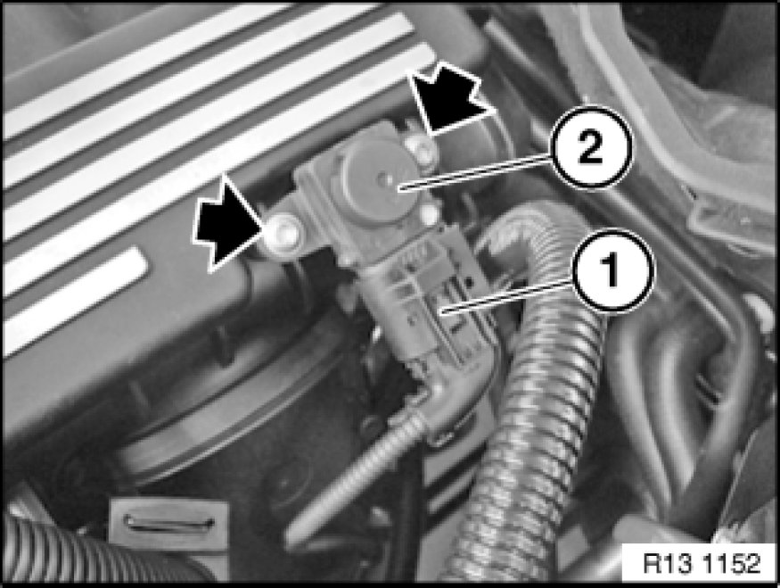

Manifold Pressure/Vacuum Sensor: Service and Repair
13 62 010 - Removing and installing/replacing differential pressure sensor (N52/N52K/N51)

Necessary preliminary tasks:
- E90/E91/E92/E93/E87/E82/E88:
Remove lower section of microfilter housing Replacing Microfilter for Interior Ventilation
- E85/E86/E90/E91/E92/E93:
Remove left tension strut on suspension strut dome
- E70:
Remove intake filter housing

Important!
Read and comply with notes on protection against electrostatic damage (ESD protection) 61 35 ... Notes on ESD Protection (Electro Static Discharge).

Release screws.
Unlock plug (1) and remove.
Pull differential pressure sensor (2) out of intake air manifold.

Installation:
Read out fault memory of control unit of Digital Engine Electronics (DME).
Check stored fault message.
Now clear the fault memory.